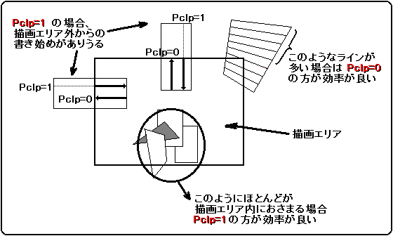
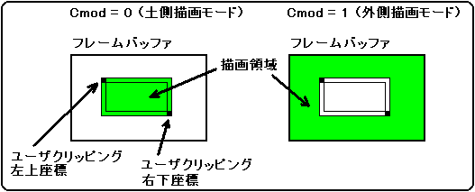

★HARDWARE Manual
★VDP1ユーザーズマニュアル
★HARDWARE Manual
★VDP1ユーザーズマニュアル
▲戻る｜
進む▼
VDP1ユーザーズマニュアル/第６章 コマンドテーブル
■プリクリッピング無効
- プリクリッピング無効： preclipping disable(Pclp)、ビット11
- プリクリッピングをさせるか、無効にするかを指定します。０を指定すると、プリクリッピングが行われます。１を指定すると、プリクリッピングが行われません。
１つの描画コマンドは、数本のラインの集合で形成され、それぞれのラインは数個のドットの集合です。１ドットごとの描画は、CPUによって指定されたクリッピングエリア(描画エリア)情報に基づき行っています。
描画エリアから完全に外れ、１ライン全体が描画不要になるラインは、事前に検出でき、描画開始をしないようにすれば描画効率のアップにつながります。また、１ラインの１つの端点が描画エリア外にある場合、描画エリア内から描き始めた方が効率は良くなります(そのラインは水平または垂直方向に限ります)。
VDP1は通常その検出作業を行っていますが、頂点(A)−(B)または(D)−(C)方向に小サイズのものの描画の場合、その検出作業によるオーバヘッド(１ラインに最大５CPUクロック)が目立ち逆に描画効率を下げる原因になります。
サイズの大きなもので、描画エリアから大きくはみ出すような場合、プリクリッピングを行った方が効率が良くなります。
このビットは、描画コマンドのときだけ有効です。その他のコマンドでは０に固定してください。
Pclp | 処 理 |
|---|
| 0 | プリクリッピング、左右反転あり |
|---|
| 1 | プリクリッピングなし、左右反転なし |
|---|
図6.6 プリクリッピング

■ユーザクリッピング有効
- ユーザクリッピング有効ビット： user clipping enable bit(Clip)、ビット10
- パーツの描画コマンドのとき、既に設定したユーザクリッピング座標に従ってパーツを描画するかしないかを指定します。0のときユーザクリッピング座標を無視して、システムクリッピング座標に従ってクリップされ、描画されます。1のときユーザクリッピング座標とクリッピングモードビット(Cmod)の指定に従ってクリッピングされ、描画されます。1のときもシステムクリッピング座標でクリッピングされます。
ユーザ/システムクリッピング座標は共に、リセット時は不定となるので、システムクリッピング座標はリセット後、ユーザクリッピング座標はユーザクリッピング指定以前に、それぞれクリッピングレジスタ設定コマンドで指定してください。
■ユーザクリッピングモード
- クリッピングモードビット： clipping mode bit(Cmod)、ビット9
- ユーザクリッピングが有効(Clip=1)のとき、ユーザクリッピング座標の内側/外側どちらを描画するかを選択します。0のとき内側を描画し、1のとき外側を描画します。
Cmod=1のとき、すでに指定したユーザクリッピング短形のラインも含めて描画領域となります。Cmod=0のとき、描画領域にはその短形のラインが含まれません。
図6.7 描画領域

- ユーザクリッピングを無効(Clip=0)にしたときはこのビットを1にしないでください。
ユーザクリッピング有効ビットとクリッピングモードビットの組み合わせは次のとおりです。
Clip | Cmod | ユーザクリッピング処理 |
|---|
| 0 | 0 | ユーザクリッピング無効 |
|---|
| 0 | 1 | 設定禁止（設定しないでください） |
|---|
| 1 | 0 | 内側描画モード |
|---|
| 1 | 1 | 外側描画モード |
|---|
▲戻る｜
進む▼
★HARDWARE Manual
★VDP1ユーザーズマニュアル
Copyright SEGA ENTERPRISES, LTD., 1997